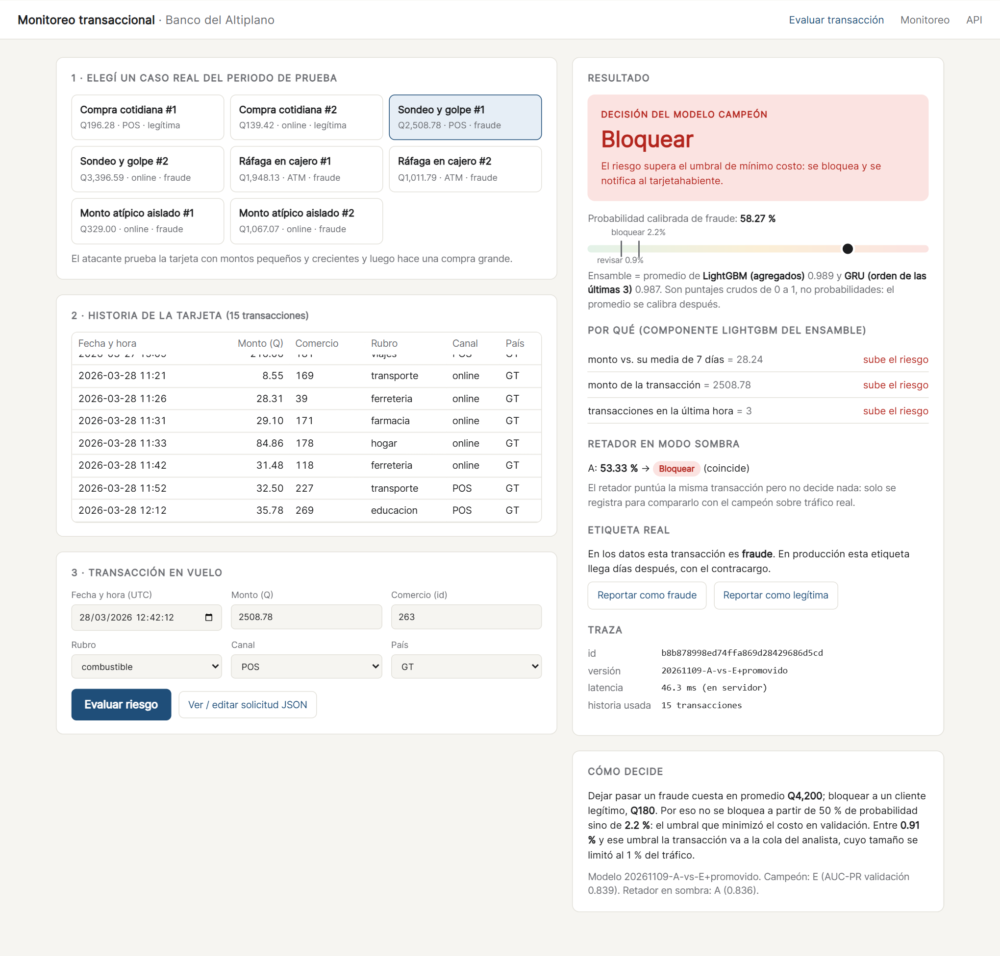
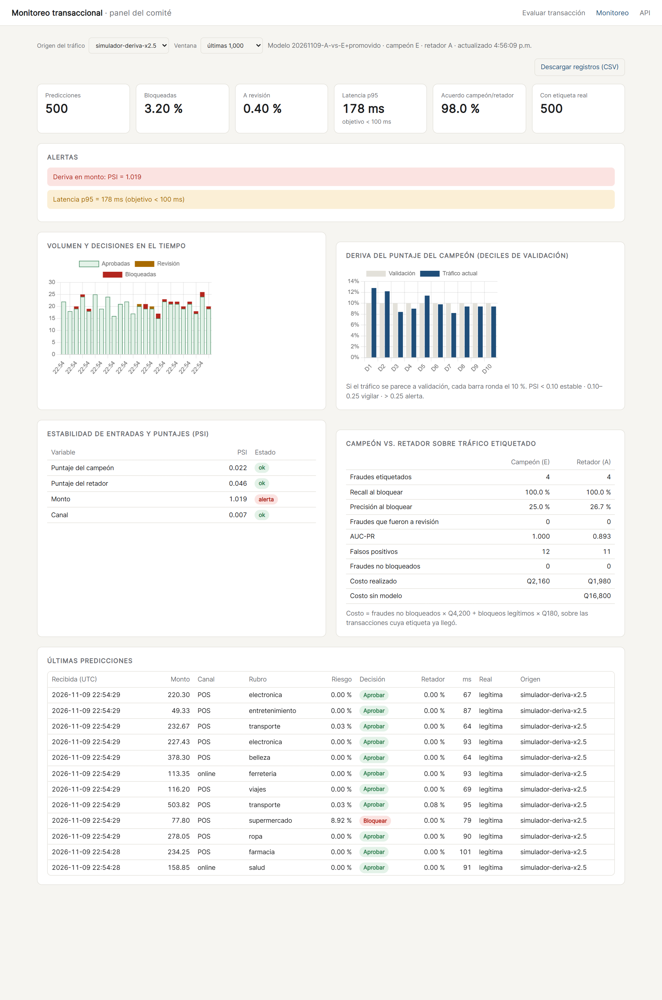

Monitoreo transaccional del Banco del Altiplano: un ensamble LightGBM + GRU decide, con LightGBM solo en sombra
Andrés Mazariegos · June Herrera
Modelo de origen: Proyecto 1 · Prof. Kevin Recinos · noviembre 2026
Un error es 23 veces más caro que el otro: el umbral no puede estar en 50 %.
| Probabilidad calibrada | Acción | Quién |
|---|---|---|
| ≥ 2.2 % | Bloquear | automático |
| 0.91 % – 2.2 % | Revisar | analista (≤ 1 % del tráfico) |
| < 0.91 % | Aprobar | automático |
Sistema autorizador — llama a la API por transacción, necesita p95 < 100 ms.
Analista de riesgos — atiende la cola de revisión y necesita saber por qué.
Este comité — decide con el panel si el modelo se mantiene, se reentrena o se reemplaza.
| Etapa | Fecha | Responsable |
|---|---|---|
| Elegir modelo (P1 sobre P2 y P3) | 8 nov | Ambos |
| Congelar hipótesis y criterio | 8 nov 20:26 | A. Mazariegos |
| Reentrenar K = 3, paquete de producción | 8 nov | J. Herrera |
| API, demo, registro, monitoreo | 8 nov | A. Mazariegos |
| Pruebas de contrato y paridad | 8 nov | J. Herrera |
| H3 (ensamble) y decisión de producción | 8 nov 21:41 | Ambos |
| Despliegue y tráfico de prueba | 9 nov | A. Mazariegos · J. Herrera |
| Monitoreo y versión final | ≤ 15 nov | Ambos |
Sintéticos (generador del P1, misma semilla): 419,821 transacciones, 4,000 tarjetas, 1.18 % fraude. Partición temporal. Las etiquetas llegan días después (contracargos).
El autorizador envía 7 días de historia. Los analistas revisan ≤ 1 % del tráfico. Costos promedio fijos.
CPU, 2 vCPU / 2 GiB (Google Cloud Run, escala a cero). Registro efímero, exportable a CSV.
Su propia prueba de recorte de historia mostró que el GRU con K = 20 estaba en su peor configuración (0.636 de AUC-PR contra 0.749 con K = 3), y que el resultado dependía mucho de la semilla (± 0.068).
El patrón "sondeo y golpe" vive en las últimas transacciones. Con 20 pasos el GRU tenía que aprender a ignorar 17 pasos de relleno o ruido en 30 épocas.
C_K3 (Deep Learning): últimas 3 transacciones → 7 numéricas + embeddings (rubro, canal, comercio) → GRU 64 con máscara → ⊕ 30 agregados → Dense 32 → sigmoide · 27,457 parámetros
A: LightGBM sobre 30 agregados causales, ciegos al orden
Peso 0.5 fijado antes de calcular nada. Se calibra el promedio.
A no puede ver el orden; el GRU sí lo usa. Si fallan en casos distintos, el promedio corrige parte de cada uno.
AUC-PR de validación, media de 3 semillas (barra) ± desviación
H1 y H2 registradas antes de entrenar (02:26 UTC). H3 registrada en su propio commit antes de calcular el ensamble (03:41 UTC). El entrenamiento guarda el SHA-256 del archivo.
Criterio: +0.03 en la media y peor semilla > 0.714
+0.032 · peor semilla 0.743 Se cumple
Criterio: media ≥ A − 0.005
−0.051 No se cumple
Criterio: AUC-PR ≥ A y costo ≤ A
+0.0035 AUC-PR, pero Q281,720 vs Q270,560 No
Permutación: barajar la ventana del GRU baja su AUC-PR de 0.786 a 0.661 → sí usa el orden.
| Prueba (13 días, 703 fraudes) | AUC-PR | Recall | Costo | Ahorro / mes |
|---|---|---|---|---|
| E — ensamble (decide) | 0.853 | 97.6 % | Q263 k | Q6.01 M |
| A — LightGBM (sombra) | 0.857 | 97.7 % | Q261 k | Q6.02 M |
| C_K3 — GRU solo | 0.789 | 94.2 % | Q365 k | Q5.79 M |
| Sin modelo | — | 0 % | Q2.95 M | — |
El ensamble cuesta Q4,560 más al mes que LightGBM solo: el 0.08 % del ahorro. Es el precio de que el Deep Learning participe en cada decisión.
H3 pedía AUC-PR y costo. Falla el costo → decide A. Los artefactos lo reflejan así y no se tocaron.
Promover E con una línea del Dockerfile: PROMOVER_RETADOR=1. Sin reentrenar; reversible quitando la línea.
En sombra, para que el panel diga con tráfico real si la decisión se sostiene.
POST /predecir · ensamble decide, LightGBM en sombra · puntaje por componente + motivos SHAP · validación de entradas (422)/retroalimentacion)/monitor: latencia, PSI de puntaje y entradas en ventana móvil, costo real de campeón vs. retadorClave del diseño: el servicio no reimplementa ninguna feature. Arma un mini-DataFrame con la historia + la transacción y llama a las mismas funciones del entrenamiento.
Keras 3 (torch) · LightGBM · FastAPI · Pydantic · SQLite · Chart.js local · Docker python:3.13-slim + torch CPU
40 transacciones reales del periodo de prueba (15 fraudes), puntuadas por el pipeline por lotes y por la API. Diferencia máxima permitida: 0.00001, para el ensamble y para LightGBM.
Primera corrida: falló — timestamps con y sin microsegundos se parseaban con un solo formato. Corregido: pasa
Mandar toda la historia o solo 7 días da el mismo puntaje → el contrato de 7 días es suficiente.
El PSI calla con tráfico estable y alerta con montos inflados o un canal nuevo.

Varias compras pequeñas en línea en 20 minutos (Q8, Q28, Q29, Q85…) y, una hora después, Q2,509 en una gasolinera. Riesgo 58 % → Bloquear.
LightGBM 0.989 y GRU 0.987: ambas mitades lo ven. Monto 28× su media de 7 días · 3 transacciones en la última hora.
53 % → también bloquearía.
URL: monitoreo-transaccional-837352528666/docs para la API

| 2,000 tx · 43 fraudes · producción | Recall | Costo |
|---|---|---|
| E — ensamble (decide) | 100 % | Q6,120 |
| A — LightGBM (sombra) | 100 % | Q6,300 |
| Sin modelo | 0 % | Q180,600 |
Local: 1 proceso p95 = 252 ms (GIL); 2 procesos p95 88–139 ms, salvo una corrida (239 ms). Cloud Run, 4 clientes: p50 91 ms, p95 166–178 ms ❌ > 100 ms
PSI del monto = 1.02 → alerta (local y en producción); PSI del puntaje = 0.02. Las entradas cambiaron, el modelo no: usa montos relativos. Alerta de entrada ≠ modelo roto.
PSI del puntaje > 0.25 · tasa de bloqueo > 3× la esperada · recall al bloquear < 90 %
Elegir el peso del ensamble con un conjunto de datos nuevo, que no se haya usado para calibrar ni para fijar el umbral.